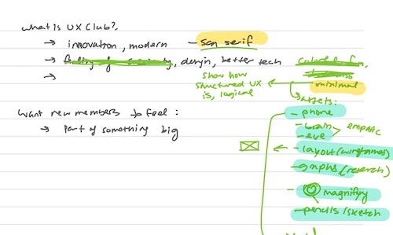
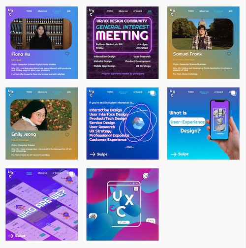
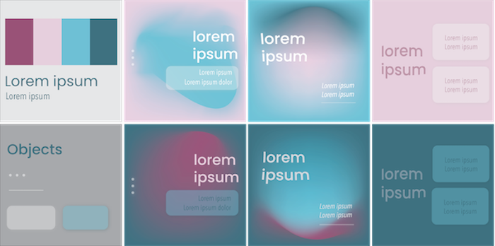
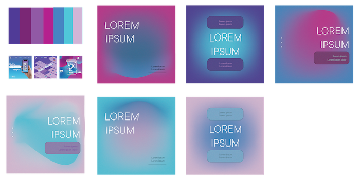
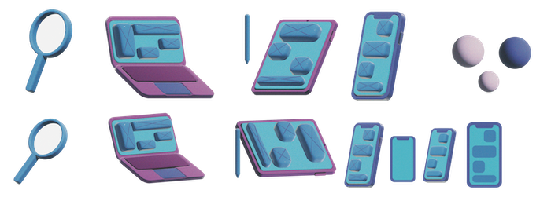
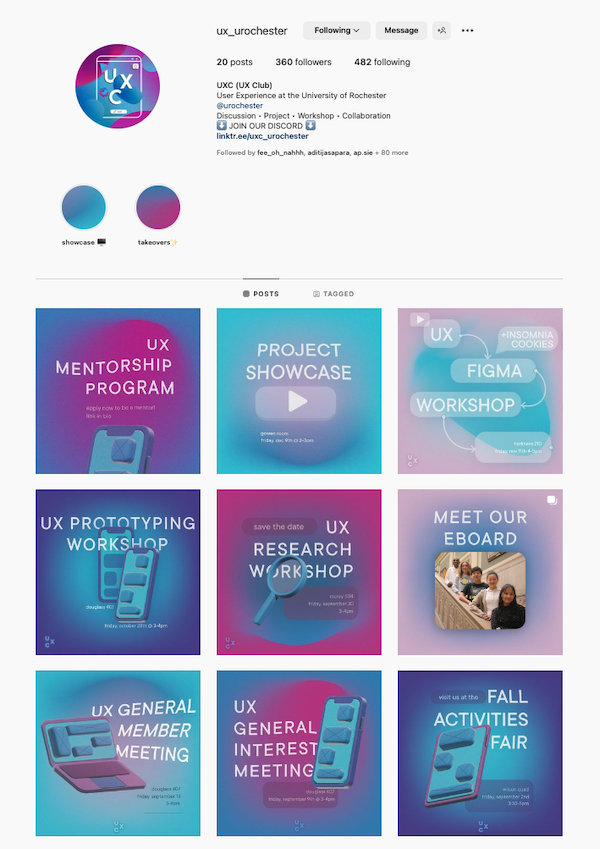

The UX Design Club is a student organization that aims to promote and expand the understanding of UX design on campus. We accomplish this through a variety of activities such as workshops, projects, and informational sessions. Each semester, we form project
groups and provide guidance and support to help students complete a UX design project from start to finish. Our aim is to foster interest in UX design and demonstrate its relevance and application in various fields.
Goals
To improve the aesthetic of our instagram feed and increase instagram engagement by creating consistent design elements and incorporating more modern fonts and designs.
Audience
Individuals who follow our instagram but don’t frequently engage with our content, as well as those who may have been introduced to our club through other related tech organizations.
Roles & Responsibilities
As the Marketing Manager of the UX Design Club, I am responsible for running our Instagram account and designing posters for events and updates.
Brainstorming and Ideation

Brand Ideation
I began by brainstorming the main themes and emotions that I wanted our audience to experience when viewing our page. These included ideas such as "innovation", "modernity", and the sense of being "a part of something big". Based on these themes, I decided
on design elements such as sans serif fonts and minimalism. I also incorporated asset designs, such as phones, wireframes, and graphs, to represent the field of UX design.

Past Instagram Posts
In addition to the new design elements, it was important to maintain a consistent brand identity in line with our previous posts. I wanted to update and refresh our feed without completely changing the overall brand image.
Brand Identity v1

Brand Identity v1
For the initial version of our updated brand identity, I selected modern yet playful fonts like Poppins and Avenir Next. I also chose a slightly warm color palette and incorporated modern UI elements such as rounded glass text boxes. The backgrounds were
gradients featuring the colors from the palette, which added a sophisticated touch.
Brand Identity v2

Brand Identity v2

Assets File
For the second iteration of our updated brand identity, I decided to stick with the established color palette from previous marketing materials, which included vibrant magentas, aqua blues, and dark purples. I chose the font TT Commons instead for a more
elegant look. I maintained a similar format to the first version, but added grain and borders to the text boxes to create a more visually interesting appearance. I also created 3D assets using Illustrator, such as a laptop, iPad, and iPhone,
to illustrate the field of UX design.
Outcomes and Results

Instagram Feed
The image above illustrates the current appearance of our Instagram page. As you can see, the page appears cohesive and well-organized due to the consistent use of the same font choices and color schemes in all posts.